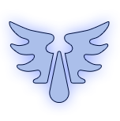
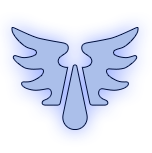

Ангелы смерти
«Они должны быть чисты сердцем и сильны телом, незапятнанны сомнениями и свободны от гордыни.
Они будут яркими звёздами в небесных битвах, Ангелами Смерти, чьи сияющие крылья несут скорое
уничтожение врагам человечества. Да будет это так тысячи раз на протяжении тысяч лет, до самого
конца вечности и распада смертной плоти»
– Робаут Жиллиман, примарх Ультрамаринов
 



Космодесант


Аде́птус Аста́ртес (больше известные как космические десантники или Ангелы Смерти) — одни из самых элитных и устрашающих
вооружённых сил Империума. Основная организационная единица Астартес — орден, самостоятельная армия.Существует более тысячи орденов,
но всё равно этого слишком мало для того, чтобы считать космических десантников основной военной силой Империума. Вместо этого
они выступают в роли высокомобильных ударных сил. Им поручают выполнение самых опасных заданий, таких как молниеносные рейды
в тылу противника, операции по проникновению и битвы в замкнутых пространствах. Космодесантники проходят жесточайший отбор,
тренировки, духовную и психическую подготовку и в десятки раз превосходят других воинов Империума.

«Братья! Битва зовёт вас. Вы ответите?»
– Капитан Катон Сикарий, Рыцарь-чемпион Макрагга

История
Первые космодесантники были созданы с использованием генетического материала примархов после того, как их унесли от Императора энергии Богов Хаоса. Двадцать легионов космического десанта, созданных из генного материала двадцати примархов.
Легионы приняли участие в Великом крестовом походе, во время которого каждый из потерянных примархов был найден и возвращён для командования своим легионом. Крестовый поход, длившийся две сотни лет, закончился предательством одного из примархов, Хоруса, который возглавил восстание половины легионов, получившее название Ересь Хоруса. В финальной битве за власть над человечеством, Император убил Хоруса. После провала восстания легионы, бывшие на стороне Хоруса, скрылись в Оке Ужаса.
Легионы, сохранившие верность, со временем были реорганизованы согласно правилам Кодекса Астартес во время Второго Основания. Каждый легион был разделён на несколько независимых орденов, и космический десант продолжает свою службу в таком виде и по сей день.
В последующих Основаниях создавались новые ордены. На данный момент существует более тысячи орденов, каждый из которых является в большей или меньшей степени потомком одного из лояльных легионов.
В некоторой степени, ордены сохраняют традиции и характер своего легиона-прародителя. Ордены подчиняются предписаниям Кодекса Астартес в различной степени: некоторые считают даже малейшее отступление от него ересью, другие же, такие как Чёрные Храмовники, Кровавые Ангелы, Космические Волки и Тёмные Ангелы следуют Кодексу лишь в определённом смысле, не воспринимая его буквально.